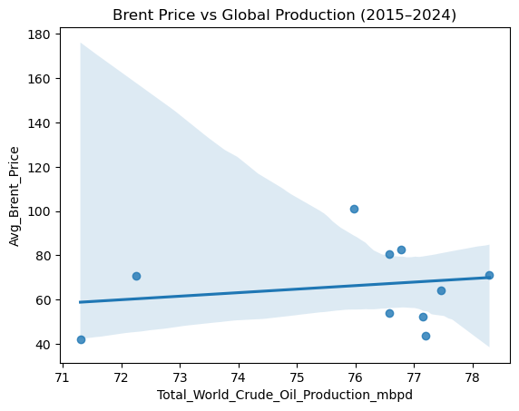
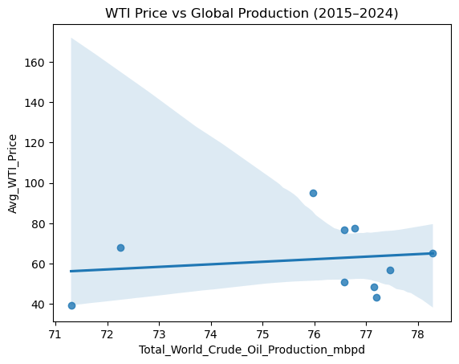
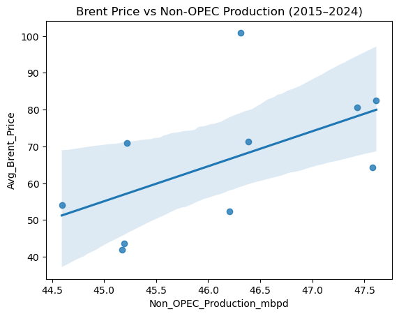
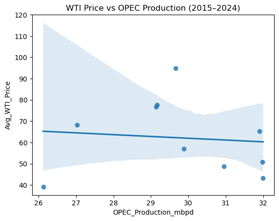
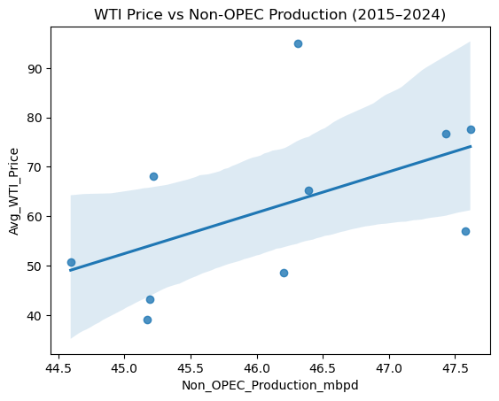
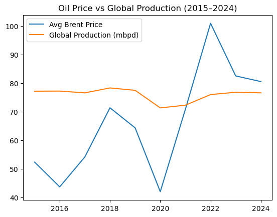
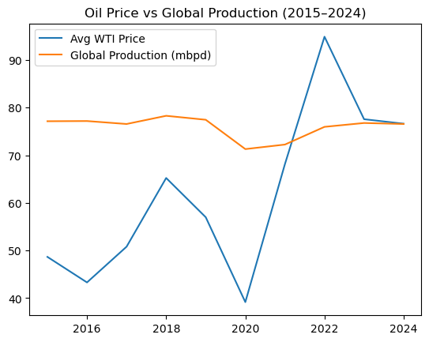

Oil production & price#
DAY 1#
Oil & Gas Data Research, Web Scaping and Analysis#
Business Problem#
Global oil production & price trends - How have crude oil prices correlated with global production volumes over the past decade?
Datasets I Need#
Crude Oil Prices
Global Production ( OPEC- Organization Of The Petroleum Exporting Countries AND NON-OPEC - Oil Producing Countries that are not part of the OPEC)
Now Let’s Import necessary libraries
import pandas as pd
import numpy as np
import matplotlib.pyplot as plt
import seaborn as sns
WTI_Price = pd.read_csv(r"C:\Users\User\Downloads\WTI_Price.csv")
Brent_Price = pd.read_csv(r"C:\Users\User\Downloads\Brent_Price.csv")
Global_Production = pd.read_csv(r"C:\Users\User\Downloads\Global_Production.csv", skiprows=4,
engine="python")
OPEC_Production = pd.read_csv(r"C:\Users\User\Downloads\OPEC_Production.csv", skiprows=1,
engine="python")
WTI_Price.head()
| observation_date | DCOILWTICO | |
|---|---|---|
| 0 | 2015-01-02 | 52.72 |
| 1 | 2015-01-05 | 50.05 |
| 2 | 2015-01-06 | 47.98 |
| 3 | 2015-01-07 | 48.69 |
| 4 | 2015-01-08 | 48.80 |
Brent_Price.head()
| observation_date | DCOILBRENTEU | |
|---|---|---|
| 0 | 2015-01-02 | 55.38 |
| 1 | 2015-01-05 | 51.08 |
| 2 | 2015-01-06 | 50.12 |
| 3 | 2015-01-07 | 49.06 |
| 4 | 2015-01-08 | 49.43 |
Global_Production.head()
| remove | Unnamed: 1 | map | linechart | units | source key | 2015 | 2016 | 2017 | 2018 | 2019 | 2020 | 2021 | 2022 | 2023 | 2024 | 2025 | 2026 | |
|---|---|---|---|---|---|---|---|---|---|---|---|---|---|---|---|---|---|---|
| 0 | 3d. Total Crude Oil Production | 3d. Total Crude Oil Production | 0 | 0 | NaN | NaN | NaN | NaN | NaN | NaN | NaN | NaN | NaN | NaN | NaN | NaN | NaN | NaN |
| 1 | Crude Oil Production | Crude Oil Production | 0 | 0 | million barrels per day | NaN | NaN | NaN | NaN | NaN | NaN | NaN | NaN | NaN | NaN | NaN | NaN | NaN |
| 2 | World Total | Total World Crude Oil Production | 1 | 1 | million barrels per day | COPR_WORLD | 77.15 | 77.19 | 76.57 | 78.29 | 77.46 | 71.30 | 72.25 | 75.97 | 76.78 | 76.57 | 78.89 | 79.59 |
| 3 | OPEC+ total | OPEC+ Crude Oil Production | 1 | 1 | million barrels per day | COPR_OPECPLUS | 40.09 | 40.71 | 39.69 | 40.41 | 39.89 | 36.38 | 36.05 | 38.63 | 37.34 | 36.03 | 36.61 | 37.63 |
| 4 | United States | United States Crude Oil Production | 1 | 1 | million barrels per day | COPRPUS | 9.43 | 8.85 | 9.36 | 10.95 | 12.31 | 11.34 | 11.31 | 12.00 | 12.94 | 13.23 | 13.61 | 13.59 |
OPEC_Production.head()
| API | Unnamed: 1 | 1973 | 1974 | 1975 | 1976 | 1977 | 1978 | 1979 | 1980 | ... | 2015 | 2016 | 2017 | 2018 | 2019 | 2020 | 2021 | 2022 | 2023 | 2024 | |
|---|---|---|---|---|---|---|---|---|---|---|---|---|---|---|---|---|---|---|---|---|---|
| 0 | NaN | crude oil including lease condensate productio... | NaN | NaN | NaN | NaN | NaN | NaN | NaN | NaN | ... | NaN | NaN | NaN | NaN | NaN | NaN | NaN | NaN | NaN | NaN |
| 1 | INTL.57-1-OPEC-TBPD.A | OPEC | 29067.00000 | 28889.700000 | 25451.40000 | 28695.600000 | 29211.400000 | 27715.300000 | 28889.000000 | 24947.142077 | ... | 30947.126299 | 31995.876107 | 31975.699733 | 31901.201353 | 29880.333821 | 26126.172747 | 27030.114092 | 29660.571514 | 29165.056991 | 29140.220297 |
| 2 | INTL.57-1-DZA-TBPD.A | Algeria | 1096.90137 | 1008.860274 | 982.99726 | 1075.259563 | 1151.849315 | 1231.052055 | 1224.167123 | 1105.907104 | ... | 1429.000000 | 1348.360656 | 1301.753425 | 1258.657534 | 1258.958904 | 1122.431694 | 1133.945205 | 1211.863014 | 1183.095890 | 1119.617486 |
| 3 | INTL.57-1-COG-TBPD.A | Congo-Brazzaville | 35.00000 | 61.000000 | 37.00000 | 39.000000 | 33.000000 | 33.000000 | 57.000000 | 65.000000 | ... | 238.478400 | 197.996325 | 244.846390 | 340.489412 | 329.705817 | 283.163453 | 265.965474 | 274.561644 | 261.986301 | 247.122951 |
| 4 | INTL.57-1-GNQ-TBPD.A | Equatorial Guinea | 0.00000 | 0.000000 | 0.00000 | 0.000000 | 0.000000 | 0.000000 | 0.000000 | 0.000000 | ... | 250.000000 | 227.000000 | 184.328767 | 172.232877 | 155.767123 | 147.562842 | 132.561644 | 118.383562 | 88.126429 | 86.726770 |
5 rows × 54 columns
DATA CLEANING#
Rename column name for clear identification
Convert Date Column to Datetime
Extract Year ( Because the production data is yearly, and the WTI/Brent data is daily.)
Convert Price to Numeric
Aggregate to Yearly Average Price (Converting prices to Year | Avg Price puts both datasets on the same time scale, so I can merge them correctly and compute a meaningful correlation (instead of comparing one yearly value to hundreds of daily values).
Data Cleaning for WTL data#
WTI_Price.describe()
| DCOILWTICO | |
|---|---|
| count | 2760.000000 |
| mean | 62.380043 |
| std | 17.617044 |
| min | -36.980000 |
| 25% | 49.407500 |
| 50% | 61.415000 |
| 75% | 73.230000 |
| max | 123.640000 |
WTI_Price = WTI_Price.rename(columns={
"observation_date": "Date",
"DCOILWTICO": "WTI_Price"
})
WTI_Price["Date"] = pd.to_datetime(WTI_Price["Date"])
WTI_Price["Year"] = WTI_Price["Date"].dt.year
WTI_Price.head()
| Date | WTI_Price | Year | |
|---|---|---|---|
| 0 | 2015-01-02 | 52.72 | 2015 |
| 1 | 2015-01-05 | 50.05 | 2015 |
| 2 | 2015-01-06 | 47.98 | 2015 |
| 3 | 2015-01-07 | 48.69 | 2015 |
| 4 | 2015-01-08 | 48.80 | 2015 |
WTI_Price["WTI_Price"] = pd.to_numeric(
WTI_Price["WTI_Price"], errors="coerce"
)
WTI_Yearly = (
WTI_Price
.groupby("Year", as_index=False)["WTI_Price"]
.mean()
.rename(columns={"WTI_Price": "Avg_WTI_Price"})
)
WTI_Yearly
| Year | Avg_WTI_Price | |
|---|---|---|
| 0 | 2015 | 48.656706 |
| 1 | 2016 | 43.293651 |
| 2 | 2017 | 50.800320 |
| 3 | 2018 | 65.227470 |
| 4 | 2019 | 56.988320 |
| 5 | 2020 | 39.160437 |
| 6 | 2021 | 68.135100 |
| 7 | 2022 | 94.902869 |
| 8 | 2023 | 77.576532 |
| 9 | 2024 | 76.632240 |
| 10 | 2025 | 65.388105 |
| 11 | 2026 | 57.768571 |
Data Cleaning for Brent Data#
Brent_Price.describe()
| DCOILBRENTEU | |
|---|---|
| count | 2800.000000 |
| mean | 66.421371 |
| std | 18.692239 |
| min | 9.120000 |
| 25% | 52.597500 |
| 50% | 66.130000 |
| 75% | 77.800000 |
| max | 133.180000 |
Brent_Price = Brent_Price.rename(columns={
"observation_date": "Date",
"DCOILBRENTEU": "Brent_Price"
})
Brent_Price["Date"] = pd.to_datetime(Brent_Price["Date"])
Brent_Price["Year"] = Brent_Price["Date"].dt.year
Brent_Price["Brent_Price"] = pd.to_numeric(
Brent_Price["Brent_Price"], errors="coerce"
)
Brent_Yearly = (
Brent_Price
.groupby("Year", as_index=False)["Brent_Price"]
.mean()
.rename(columns={"Brent_Price": "Avg_Brent_Price"})
)
Brent_Yearly
| Year | Avg_Brent_Price | |
|---|---|---|
| 0 | 2015 | 52.316549 |
| 1 | 2016 | 43.638000 |
| 2 | 2017 | 54.124805 |
| 3 | 2018 | 71.335000 |
| 4 | 2019 | 64.300623 |
| 5 | 2020 | 41.957255 |
| 6 | 2021 | 70.855336 |
| 7 | 2022 | 100.931310 |
| 8 | 2023 | 82.493865 |
| 9 | 2024 | 80.521850 |
| 10 | 2025 | 69.142648 |
| 11 | 2026 | 63.144286 |
Data Cleaning For Total Crude oil Production#
Drop unwanted columns like “remove”, “map”, “linechart”, “source key”
Drop rows 0,1,3,4
Then Create a Year and Total World Crude Oil Production column
gp = Global_Production.copy()
gp.columns = gp.columns.str.strip()
cols_to_drop = ["remove", "map", "linechart", "source key"]
gp = gp.drop(columns=cols_to_drop, errors="ignore")
# Drop rows 0,1,3,4
gp = gp.drop(index=[0, 1, 3, 4], errors="ignore").reset_index(drop=True)
# Keep ONLY the row for Total World Crude Oil Production
gp_world = gp[gp["Unnamed: 1"].str.contains("Total World Crude Oil Production", na=False)]
# Identify year columns (2015–2026)
year_cols = [c for c in gp_world.columns if str(c).isdigit()]
Global_Production_clean = gp_world.melt(
value_vars=year_cols,
var_name="Year",
value_name="Total_World_Crude_Oil_Production_mbpd"
)
Global_Production_clean["Year"] = Global_Production_clean["Year"].astype(int)
Global_Production_clean["Total_World_Crude_Oil_Production_mbpd"] = pd.to_numeric(
Global_Production_clean["Total_World_Crude_Oil_Production_mbpd"], errors="coerce"
)
Global_Production_clean
| Year | Total_World_Crude_Oil_Production_mbpd | |
|---|---|---|
| 0 | 2015 | 77.15 |
| 1 | 2016 | 77.19 |
| 2 | 2017 | 76.57 |
| 3 | 2018 | 78.29 |
| 4 | 2019 | 77.46 |
| 5 | 2020 | 71.30 |
| 6 | 2021 | 72.25 |
| 7 | 2022 | 75.97 |
| 8 | 2023 | 76.78 |
| 9 | 2024 | 76.57 |
| 10 | 2025 | 78.89 |
| 11 | 2026 | 79.59 |
Data Cleaning For OPEC Production data#
Drop API
Drop year columns 1973–2014
Drop row 0
Exclude the OPEC total row (keep only member countries)
End with a tidy table: Year | OPEC | oil_Production
op = OPEC_Production.copy()
op.columns = op.columns.astype(str).str.strip()
# Drop API column
op = op.drop(columns=["API"], errors="ignore")
# Drop year columns 1973–2014
years_to_drop = [str(y) for y in range(1973, 2015)]
op = op.drop(columns=[c for c in years_to_drop if c in op.columns], errors="ignore")
# Remove row 0 (metadata row)
op = op.drop(index=0, errors="ignore").reset_index(drop=True)
# Rename country column for clarity (it appears as "Unnamed: 1")
op = op.rename(columns={"Unnamed: 1": "OPEC"})
# Remove the total OPEC row (keep only member countries)
op = op[op["OPEC"].str.strip().str.upper() != "OPEC"]
# Identify remaining year columns (2015–2026)
year_cols = [c for c in op.columns if c.isdigit()]
OPEC_Production_clean = op.melt(
id_vars=["OPEC"],
value_vars=year_cols,
var_name="Year",
value_name="Oil_Production_mbpd_OPEC"
)
OPEC_Production_clean["Year"] = OPEC_Production_clean["Year"].astype(int)
OPEC_Production_clean["Oil_Production_mbpd_OPEC"] = pd.to_numeric(OPEC_Production_clean["Oil_Production_mbpd_OPEC"], errors="coerce")
OPEC_Production_clean
| OPEC | Year | Oil_Production_mbpd_OPEC | |
|---|---|---|---|
| 0 | Algeria | 2015 | 1429.000000 |
| 1 | Congo-Brazzaville | 2015 | 238.478400 |
| 2 | Equatorial Guinea | 2015 | 250.000000 |
| 3 | Gabon | 2015 | 213.328767 |
| 4 | Iran | 2015 | 3293.189041 |
| ... | ... | ... | ... |
| 115 | Libya | 2024 | 1163.273224 |
| 116 | Nigeria | 2024 | 1488.869572 |
| 117 | Saudi Arabia | 2024 | 9232.154456 |
| 118 | United Arab Emirates | 2024 | 3744.945355 |
| 119 | Venezuela | 2024 | 863.469945 |
120 rows × 3 columns
Let’s Check for missing Values#
WTI_Yearly.isnull().sum()
Year 0
Avg_WTI_Price 0
dtype: int64
Brent_Yearly.isnull().sum()
Year 0
Avg_Brent_Price 0
dtype: int64
Global_Production_clean.isnull().sum()
Year 0
Total_World_Crude_Oil_Production_mbpd 0
dtype: int64
OPEC_Production_clean.isnull().sum()
OPEC 0
Year 0
Oil_Production_mbpd_OPEC 0
dtype: int64
Now, We are donewith the data cleaning.
But I noticed that the OPEC Production has data of 2015 - 2024
And others have up to 2026
My Initial Analysis was for a decade that is 2015 - 2025
So, Now I have to filter all datasets to 2015–2024
START_YEAR, END_YEAR = 2015, 2024
WTI_Yearly = WTI_Yearly.query("Year >= @START_YEAR and Year <= @END_YEAR")
Brent_Yearly = Brent_Yearly.query("Year >= @START_YEAR and Year <= @END_YEAR")
Global_Production_clean = Global_Production_clean.query("Year >= @START_YEAR and Year <= @END_YEAR")
OPEC_Production_clean = OPEC_Production_clean.query("Year >= @START_YEAR and Year <= @END_YEAR")
Merge dataset for analysis#
But let’s make the OPEC production data a Yearly data
OPEC_total_yearly = (OPEC_Production_clean.groupby("Year", as_index=False)["Oil_Production_mbpd_OPEC"].sum()
.rename(columns={"Oil_Production_mbpd_OPEC":"OPEC_Production_mbpd"}))
OPEC_total_yearly
| Year | OPEC_Production_mbpd | |
|---|---|---|
| 0 | 2015 | 30947.126299 |
| 1 | 2016 | 31995.876107 |
| 2 | 2017 | 31975.699733 |
| 3 | 2018 | 31901.201353 |
| 4 | 2019 | 29880.333821 |
| 5 | 2020 | 26126.172747 |
| 6 | 2021 | 27030.114092 |
| 7 | 2022 | 29660.571514 |
| 8 | 2023 | 29165.056991 |
| 9 | 2024 | 29140.220297 |
Crude_Ol_Production_and_Prices = (Global_Production_clean
.merge(OPEC_total_yearly, on="Year", how="inner")
.merge(WTI_Yearly, on="Year", how="inner")
.merge(Brent_Yearly, on="Year", how="inner")
)
Crude_Ol_Production_and_Prices.head()
| Year | Total_World_Crude_Oil_Production_mbpd | OPEC_Production_mbpd | Avg_WTI_Price | Avg_Brent_Price | |
|---|---|---|---|---|---|
| 0 | 2015 | 77.15 | 30947.126299 | 48.656706 | 52.316549 |
| 1 | 2016 | 77.19 | 31995.876107 | 43.293651 | 43.638000 |
| 2 | 2017 | 76.57 | 31975.699733 | 50.800320 | 54.124805 |
| 3 | 2018 | 78.29 | 31901.201353 | 65.227470 | 71.335000 |
| 4 | 2019 | 77.46 | 29880.333821 | 56.988320 | 64.300623 |
Good, but notice as OPEC production is higher than Total world production and that is not realistic
I got to find out that it was in Thousand barrel per day not Million Barrel per day
So let’s Convert it to mb/p
Crude_Ol_Production_and_Prices["OPEC_Production_mbpd"] = Crude_Ol_Production_and_Prices["OPEC_Production_mbpd"] / 1000
Crude_Ol_Production_and_Prices
| Year | Total_World_Crude_Oil_Production_mbpd | OPEC_Production_mbpd | Avg_WTI_Price | Avg_Brent_Price | |
|---|---|---|---|---|---|
| 0 | 2015 | 77.15 | 30.947126 | 48.656706 | 52.316549 |
| 1 | 2016 | 77.19 | 31.995876 | 43.293651 | 43.638000 |
| 2 | 2017 | 76.57 | 31.975700 | 50.800320 | 54.124805 |
| 3 | 2018 | 78.29 | 31.901201 | 65.227470 | 71.335000 |
| 4 | 2019 | 77.46 | 29.880334 | 56.988320 | 64.300623 |
| 5 | 2020 | 71.30 | 26.126173 | 39.160437 | 41.957255 |
| 6 | 2021 | 72.25 | 27.030114 | 68.135100 | 70.855336 |
| 7 | 2022 | 75.97 | 29.660572 | 94.902869 | 100.931310 |
| 8 | 2023 | 76.78 | 29.165057 | 77.576532 | 82.493865 |
| 9 | 2024 | 76.57 | 29.140220 | 76.632240 | 80.521850 |
Crude_Ol_Production_and_Prices["Non_OPEC_Production_mbpd"] = (
Crude_Ol_Production_and_Prices["Total_World_Crude_Oil_Production_mbpd"] - Crude_Ol_Production_and_Prices["OPEC_Production_mbpd"]
)
Crude_Ol_Production_and_Prices
| Year | Total_World_Crude_Oil_Production_mbpd | OPEC_Production_mbpd | Avg_WTI_Price | Avg_Brent_Price | Non_OPEC_Production_mbpd | |
|---|---|---|---|---|---|---|
| 0 | 2015 | 77.15 | 30.947126 | 48.656706 | 52.316549 | 46.202874 |
| 1 | 2016 | 77.19 | 31.995876 | 43.293651 | 43.638000 | 45.194124 |
| 2 | 2017 | 76.57 | 31.975700 | 50.800320 | 54.124805 | 44.594300 |
| 3 | 2018 | 78.29 | 31.901201 | 65.227470 | 71.335000 | 46.388799 |
| 4 | 2019 | 77.46 | 29.880334 | 56.988320 | 64.300623 | 47.579666 |
| 5 | 2020 | 71.30 | 26.126173 | 39.160437 | 41.957255 | 45.173827 |
| 6 | 2021 | 72.25 | 27.030114 | 68.135100 | 70.855336 | 45.219886 |
| 7 | 2022 | 75.97 | 29.660572 | 94.902869 | 100.931310 | 46.309428 |
| 8 | 2023 | 76.78 | 29.165057 | 77.576532 | 82.493865 | 47.614943 |
| 9 | 2024 | 76.57 | 29.140220 | 76.632240 | 80.521850 | 47.429780 |
Crude_Ol_Production_and_Prices.to_csv("Crude_Ol_Production_and_Prices.csv", index=False)
DAY 2#
To Answer Business Question#
How have crude oil prices correlated with global production volumes over the past decade?
We’ll break this into sub-questions:
Is higher global production associated with lower prices?
Does OPEC vs Non-OPEC production behave differently?
Do price–production relationships change during shocks (COVID, Russia-Ukraine, OPEC cuts)?
Answer Q1: “Is higher global production associated with lower prices?”
Correlation (global vs prices)
corr_global_wti = Crude_Ol_Production_and_Prices["Total_World_Crude_Oil_Production_mbpd"].corr(Crude_Ol_Production_and_Prices["Avg_WTI_Price"])
corr_global_brent = Crude_Ol_Production_and_Prices["Total_World_Crude_Oil_Production_mbpd"].corr(Crude_Ol_Production_and_Prices["Avg_Brent_Price"])
corr_global_wti, corr_global_brent
(0.1648652697170697, 0.1950721498760255)
sns.regplot(data= Crude_Ol_Production_and_Prices, x="Total_World_Crude_Oil_Production_mbpd", y="Avg_Brent_Price")
plt.title("Brent Price vs Global Production (2015–2024)")
plt.show()
sns.regplot(data= Crude_Ol_Production_and_Prices, x="Total_World_Crude_Oil_Production_mbpd", y="Avg_WTI_Price")
plt.title("WTI Price vs Global Production (2015–2024)")
plt.show()


Over 2015–2024, global crude oil production shows a very weak positive correlation with prices (WTI: r≈0.16, Brent: r≈0.20).
This suggests that production volumes alone do not explain price movements; demand shifts and supply disruptions likely played a larger role.
Why it might be weak/positive (what’s driving this)
COVID (2020): both production and prices fell together (demand shock) → pushes correlation positive.
2022: prices rose due to geopolitics even while production recovered → weakens any simple supply-driven negative link.
OPEC policy cuts can also break a simple “more supply → lower price” pattern.
Answer Q2: “Does OPEC vs Non-OPEC behave differently?”
corr_opec_brent = Crude_Ol_Production_and_Prices["OPEC_Production_mbpd"].corr(Crude_Ol_Production_and_Prices["Avg_Brent_Price"])
corr_non_opec_brent = Crude_Ol_Production_and_Prices["Non_OPEC_Production_mbpd"].corr(Crude_Ol_Production_and_Prices["Avg_Brent_Price"])
corr_opec_wti = Crude_Ol_Production_and_Prices["OPEC_Production_mbpd"].corr(Crude_Ol_Production_and_Prices["Avg_WTI_Price"])
corr_non_opec_wti = Crude_Ol_Production_and_Prices["Non_OPEC_Production_mbpd"].corr(Crude_Ol_Production_and_Prices["Avg_WTI_Price"])
corr_opec_brent, corr_non_opec_brent, corr_opec_wti, corr_non_opec_wti
(-0.08604228190677808,
0.5623095371652642,
-0.0978677872854994,
0.5214299681006702)
sns.regplot(Crude_Ol_Production_and_Prices, x="OPEC_Production_mbpd", y="Avg_Brent_Price")
plt.title("Brent Price vs OPEC Production (2015–2024)")
plt.show()
sns.regplot(data=Crude_Ol_Production_and_Prices, x="Non_OPEC_Production_mbpd", y="Avg_Brent_Price")
plt.title("Brent Price vs Non-OPEC Production (2015–2024)")
plt.show()
sns.regplot(Crude_Ol_Production_and_Prices, x="OPEC_Production_mbpd", y="Avg_WTI_Price")
plt.title("WTI Price vs OPEC Production (2015–2024)")
plt.show()
sns.regplot(data=Crude_Ol_Production_and_Prices, x="Non_OPEC_Production_mbpd", y="Avg_WTI_Price")
plt.title("WTI Price vs Non-OPEC Production (2015–2024)")
plt.show()



Over 2015–2024, OPEC production has a near-zero correlation with crude prices (Brent r≈-0.09; WTI r≈-0.10), while Non-OPEC production shows a moderate positive correlation (Brent r≈0.56; WTI r≈0.52).
This suggests Non-OPEC output is more price-responsive, whereas OPEC output reflects strategic supply management rather than tracking prices directly.”
Correlation ≠ causation. The positive Non-OPEC correlation could also reflect demand cycles (both production and prices rise in expansions).
Answer Q3: “Do relationships change during shocks?”
# Create period labels (pre-COVID, COVID, post-COVID/geopolitical) and compute correlation per period.
def label_period(y):
if y <= 2019:
return "Pre-COVID (2015–2019)"
elif y <= 2021:
return "COVID shock (2020–2021)"
else:
return "Post-COVID/Geo (2022–2024)"
Crude_Ol_Production_and_Prices["Period"] = Crude_Ol_Production_and_Prices["Year"].apply(label_period)
by_period = (Crude_Ol_Production_and_Prices.groupby("Period")
.apply(lambda g: pd.Series({
"Corr_Global_Brent": g["Total_World_Crude_Oil_Production_mbpd"].corr(g["Avg_Brent_Price"]),
"Corr_OPEC_Brent": g["OPEC_Production_mbpd"].corr(g["Avg_Brent_Price"]),
"Corr_NonOPEC_Brent": g["Non_OPEC_Production_mbpd"].corr(g["Avg_Brent_Price"]),
}))
.reset_index())
by_period
C:\Users\User\AppData\Local\Temp\ipykernel_20792\2370351447.py:2: DeprecationWarning: DataFrameGroupBy.apply operated on the grouping columns. This behavior is deprecated, and in a future version of pandas the grouping columns will be excluded from the operation. Either pass `include_groups=False` to exclude the groupings or explicitly select the grouping columns after groupby to silence this warning.
.apply(lambda g: pd.Series({
| Period | Corr_Global_Brent | Corr_OPEC_Brent | Corr_NonOPEC_Brent | |
|---|---|---|---|---|
| 0 | COVID shock (2020–2021) | 1.000000 | 1.000000 | 1.000000 |
| 1 | Post-COVID/Geo (2022–2024) | -0.942701 | 0.998971 | -0.976084 |
| 2 | Pre-COVID (2015–2019) | 0.724255 | -0.283615 | 0.621498 |
by_period = (Crude_Ol_Production_and_Prices.groupby("Period")
.apply(lambda g: pd.Series({
"Corr_Global_WTI": g["Total_World_Crude_Oil_Production_mbpd"].corr(g["Avg_WTI_Price"]),
"Corr_OPEC_WTI": g["OPEC_Production_mbpd"].corr(g["Avg_WTI_Price"]),
"Corr_NonOPEC_WTI": g["Non_OPEC_Production_mbpd"].corr(g["Avg_WTI_Price"]),
}))
.reset_index())
by_period
C:\Users\User\AppData\Local\Temp\ipykernel_20792\2959376930.py:2: DeprecationWarning: DataFrameGroupBy.apply operated on the grouping columns. This behavior is deprecated, and in a future version of pandas the grouping columns will be excluded from the operation. Either pass `include_groups=False` to exclude the groupings or explicitly select the grouping columns after groupby to silence this warning.
.apply(lambda g: pd.Series({
| Period | Corr_Global_WTI | Corr_OPEC_WTI | Corr_NonOPEC_WTI | |
|---|---|---|---|---|
| 0 | COVID shock (2020–2021) | 1.000000 | 1.000000 | 1.000000 |
| 1 | Post-COVID/Geo (2022–2024) | -0.955815 | 0.999994 | -0.984313 |
| 2 | Pre-COVID (2015–2019) | 0.762369 | -0.160857 | 0.543508 |
plt.plot(Crude_Ol_Production_and_Prices["Year"], Crude_Ol_Production_and_Prices["Avg_Brent_Price"], label="Avg Brent Price")
plt.plot(Crude_Ol_Production_and_Prices["Year"], Crude_Ol_Production_and_Prices["Total_World_Crude_Oil_Production_mbpd"], label="Global Production (mbpd)")
plt.legend()
plt.title("Oil Price vs Global Production (2015–2024)")
plt.show()
plt.plot(Crude_Ol_Production_and_Prices["Year"], Crude_Ol_Production_and_Prices["Avg_WTI_Price"], label="Avg WTI Price")
plt.plot(Crude_Ol_Production_and_Prices["Year"], Crude_Ol_Production_and_Prices["Total_World_Crude_Oil_Production_mbpd"], label="Global Production (mbpd)")
plt.legend()
plt.title("Oil Price vs Global Production (2015–2024)")
plt.show()


Before COVID, production and prices tended to rise together (likely demand-driven), while OPEC production moved weakly opposite to prices, consistent with supply management.
Shock periods: the relationship appears to flip and become more volatile
Post-2022: Global and Non-OPEC become strongly negative, while OPEC becomes strongly positive (in your outputs).
During the post-2022 period, correlations become extreme and change sign, suggesting the price–production relationship is dominated by shocks and policy responses rather than a stable supply–price mechanism. However, this period contains only three annual observations, so results should be treated as directional rather than conclusive.
Crude_Ol_Production_and_Prices.columns
Index(['Year', 'Total_World_Crude_Oil_Production_mbpd', 'OPEC_Production_mbpd',
'Avg_WTI_Price', 'Avg_Brent_Price', 'Non_OPEC_Production_mbpd',
'Period'],
dtype='object')
Crude_Ol_Production_and_Prices.head(2)
| Year | Total_World_Crude_Oil_Production_mbpd | OPEC_Production_mbpd | Avg_WTI_Price | Avg_Brent_Price | Non_OPEC_Production_mbpd | Period | |
|---|---|---|---|---|---|---|---|
| 0 | 2015 | 77.15 | 30.947126 | 48.656706 | 52.316549 | 46.202874 | Pre-COVID (2015–2019) |
| 1 | 2016 | 77.19 | 31.995876 | 43.293651 | 43.638000 | 45.194124 | Pre-COVID (2015–2019) |
Crude_Ol_Production_and_Prices.to_csv("Crude_Ol_Production_and_Prices.csv", index=False)
import pandas as pd
corr_by_period_brent = (
Crude_Ol_Production_and_Prices.groupby("Period")
.apply(lambda g: pd.Series({
"Corr_Global_Brent": g["Total_World_Crude_Oil_Production_mbpd"].corr(g["Avg_Brent_Price"]),
"Corr_OPEC_Brent": g["OPEC_Production_mbpd"].corr(g["Avg_Brent_Price"]),
"Corr_NonOPEC_Brent": g["Non_OPEC_Production_mbpd"].corr(g["Avg_Brent_Price"]),
}))
.reset_index()
)
corr_by_period_brent.to_csv("corr_by_period_brent.csv", index=False)
C:\Users\User\AppData\Local\Temp\ipykernel_20792\2486298918.py:5: DeprecationWarning: DataFrameGroupBy.apply operated on the grouping columns. This behavior is deprecated, and in a future version of pandas the grouping columns will be excluded from the operation. Either pass `include_groups=False` to exclude the groupings or explicitly select the grouping columns after groupby to silence this warning.
.apply(lambda g: pd.Series({
corr_by_period_wti = (
Crude_Ol_Production_and_Prices.groupby("Period")
.apply(lambda g: pd.Series({
"Corr_Global_WTI": g["Total_World_Crude_Oil_Production_mbpd"].corr(g["Avg_WTI_Price"]),
"Corr_OPEC_WTI": g["OPEC_Production_mbpd"].corr(g["Avg_WTI_Price"]),
"Corr_NonOPEC_WTI": g["Non_OPEC_Production_mbpd"].corr(g["Avg_WTI_Price"]),
}))
.reset_index()
)
corr_by_period_wti.to_csv("corr_by_period_wti.csv", index=False)
C:\Users\User\AppData\Local\Temp\ipykernel_20792\2626148364.py:3: DeprecationWarning: DataFrameGroupBy.apply operated on the grouping columns. This behavior is deprecated, and in a future version of pandas the grouping columns will be excluded from the operation. Either pass `include_groups=False` to exclude the groupings or explicitly select the grouping columns after groupby to silence this warning.
.apply(lambda g: pd.Series({
heatmap = corr_by_period_brent.melt(
id_vars="Period",
value_vars=["Corr_Global_Brent", "Corr_OPEC_Brent", "Corr_NonOPEC_Brent"],
var_name="Producer_Type",
value_name="Correlation"
)
heatmap["Producer_Type"] = heatmap["Producer_Type"].replace({
"Corr_Global_Brent": "Global",
"Corr_OPEC_Brent": "OPEC",
"Corr_NonOPEC_Brent": "Non-OPEC"
})
heatmap.to_csv("correlation_heatmap_brent.csv", index=False)
heatmap
| Period | Producer_Type | Correlation | |
|---|---|---|---|
| 0 | COVID shock (2020–2021) | Global | 1.000000 |
| 1 | Post-COVID/Geo (2022–2024) | Global | -0.942701 |
| 2 | Pre-COVID (2015–2019) | Global | 0.724255 |
| 3 | COVID shock (2020–2021) | OPEC | 1.000000 |
| 4 | Post-COVID/Geo (2022–2024) | OPEC | 0.998971 |
| 5 | Pre-COVID (2015–2019) | OPEC | -0.283615 |
| 6 | COVID shock (2020–2021) | Non-OPEC | 1.000000 |
| 7 | Post-COVID/Geo (2022–2024) | Non-OPEC | -0.976084 |
| 8 | Pre-COVID (2015–2019) | Non-OPEC | 0.621498 |